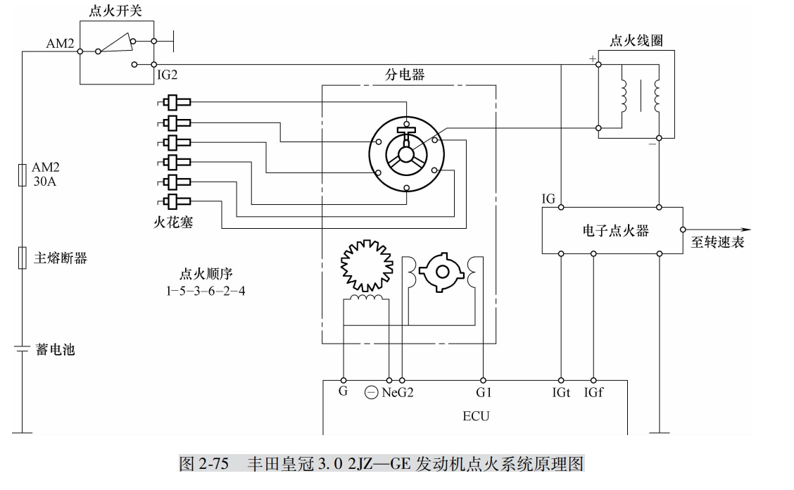

汽车服务工程
大三下学期

章节内容
2022-08-22由 Alex 编辑
2.4 电子点火系统的故障诊断与检测
电子点火系统可分为两类，即普通电子点火系统 （无触点式）和微计算机控制点火系统（又称电控点火系），后者又可分为带分电器式电控点火系统和不带分电器式电控点火系统。
电子点火系统与传统点火系统比较，主要增加了点火信号传感器和电子点火器（点火模块），取消了断电器触点。
点火信号传感器相当于传统点火系统分电器的断电器凸轮，由触发轮和传感器等组成。常见的点火信号传感器有磁感应式、光电式和霍尔效应式3种。
电子点火器的作用是接通或切断点火线圈的初级电流，相当于传统分电器的断电器触点。在故障诊断与检测中，电子点火系统与传统点火系统在低压电路故障诊断方法是完全不相同的；
而高压电路故障诊断方法与传统点火系统基本相同点火系统出现故障，发动机的表观现象主要有以下几种情况：
①发动机无法起动。
②发动机起动困难。
③发动机动力不足。
④发动机运转不良。
⑤发动机冒烟和排气管 “放炮”。
⑥发动机进气管回火。
⑦发动机怠速不稳。
⑧发动机加速熄火。
⑨发动机油耗过高。
⑩发动机抖动。
⑪发动机噪声很大。
电子点火系统故障的常用诊断方法有：搭铁跳火法、干电池检查法、模拟信号法、示波器法和故障诊断仪法等。
2.4.1 普通电子点火系统的故障诊断与检测
普通电子点火系统主要由电源、点火开关、带感应式点火信号传感器 （信号发生器）的分电器总成、电子点火器、点火线圈及火花塞等组成。
图 2-72所示为上海桑塔纳 LX轿车发动机装配的普通电子点火系统线路连接图，采用了霍尔效应式点火信号传感器。
1. 霍尔式信号发生器的检查
（1）霍尔信号电压的检测 打开点火开关，转动分电器转子，用万用表检测点火控制
器 3、6端子上的电压，如图 2-73所示。电压表读数应在 0～9V之间变化，否则说明点火信
号发生器有故障，应更换。
（2）模拟信号法检测
1）在点火线圈 1号端子与搭铁之间连一试灯。从分电器上拔下插接器，如图 2-74所示。
 2）打开点火开关，将插接器绿色线作短路搭铁，同时取中央高压线距气缸体 3～5mm
进行跳火。
3）若试灯暗亮变化，中心跳火强烈说明传感器正常。
4）若试灯亮度不变，说明电子点火器损坏或信号线断路。
2.电子点火器的检测
（1）信号线电压检测
1）打开点火开关，用万用表测量电子点火器 2、4端子电压应为 12V，测 3、5端子电
压应为 12V，否则说明电子点火器已损坏，应更换。
2）测分电器信号发生器插接器红黑线与棕白线电压应为 12V，否则说明线路有断路。
（2）点火线圈初级线圈接线柱的检测 将万用表电压档的正表笔接点火线圈的 15号端
子，负表笔接点火线圈 1号端子，拔出分电器信号线插接器，打开点火开关，电压表读数应
为 6V，且在 1～2s内降至 0V。否则说明电子点火器已失效，应更换。
2）打开点火开关，将插接器绿色线作短路搭铁，同时取中央高压线距气缸体 3～5mm
进行跳火。
3）若试灯暗亮变化，中心跳火强烈说明传感器正常。
4）若试灯亮度不变，说明电子点火器损坏或信号线断路。
2.电子点火器的检测
（1）信号线电压检测
1）打开点火开关，用万用表测量电子点火器 2、4端子电压应为 12V，测 3、5端子电
压应为 12V，否则说明电子点火器已损坏，应更换。
2）测分电器信号发生器插接器红黑线与棕白线电压应为 12V，否则说明线路有断路。
（2）点火线圈初级线圈接线柱的检测 将万用表电压档的正表笔接点火线圈的 15号端
子，负表笔接点火线圈 1号端子，拔出分电器信号线插接器，打开点火开关，电压表读数应
为 6V，且在 1～2s内降至 0V。否则说明电子点火器已失效，应更换。
2.4.2 计算机控制电子点火系统的故障诊断与检测
计算机控制电子点火系统主要由传感器、发动机电控单元 （ECU）、电子点火器、点火线圈、配电器等组成。
1.丰田皇冠 3.02JZ—GE发动机点火系统故障诊断与检测
丰田皇冠 3.02JZ—GE发动机点火系统属于带分电器电控点火系统，系统原理如图 2-75所示。
点火系统由 ECU控制点火器、点火器控制点火线圈，采用磁电式曲轴位置传感器和凸轮轴位置传感器。

（1）曲轴位置传感器和凸轮轴位置传感器的检测
1）传感器电阻的检测。拔下传感器的插接器，用万用表电阻档测量传感器各端子间的
电阻，其值应符合表 2-16的数值要求，否则须更换曲轴位置传感器。
2）传感器输出信号检测。拆下曲轴位置传感器插接器，用万用表或示波器检测 Ne-G、
G1-G、G2-G应有脉冲信号输出。用示波器进行检测时应先起动发动机，让发动机怠速运
转，观察示波器上的波形应符合图 2-76所示。传感器波形的幅值随转速而增加，且幅值、
频率和形状在一定的条件下应相似，相邻两脉冲时间间隔相等。若没有脉冲信号输出，则必
须更换曲轴位置传感器。
3）传感线圈与信号转子的间隙检查。用塞尺测量信号转子与传感线圈凸出部分的空气
间隙，如图2-77所示。其间隙应为 0.2～0.4mm，若间隙不符合要求，则须调整或更换分电
器总成。
（2）点火线圈的检测 拔下点火线圈的插接器，用万用表电阻档测量点火线圈的电阻，
其阻值应符合表2-17所列的电阻值。若不符，则须更换点火线圈。
（3）点火器的检测 打开点火开关，用万用表分别检查点火器的 IG端子和点火线圈的
+端子与搭铁之间的电压，应为蓄电池电压，否则说明电源电路有故障。发动机怠速时，检
查点火器 IGt端子与搭铁端子之间，应有脉冲信号 （0.5～1.0V），否则说明控制线路或
ECU有故障。发动机怠速时，检查点火器的 IGf端子与搭铁之间，应有脉冲信号 （0.5～
1.0V），否则说明点火器有故障。
（4）IGt与 IGf信号的检测 点火系统 IGt或 IGf信号不良，应对点火器、ECU及 ECU
与点火器的连接线路进行检测。
从分电器上拔下中央高压线，距离气缸体 5～7mm跳火，或插上跳火器，起动发动机，
检查跳火情况。
若跳火检查火花正常：
1）检查 ECU与点火器之间 IGf信号电路是否断路或短路，若有异常，予以修理
或更换配线或插接器。
2）如果检查线路情况正常，则拔下点火器插接器，打开点火开关，检测线束端
IGf与搭铁之间的电压，标准值应为 4.5～5V。否则检查或更换 ECU。
3）上述检查都正常，则故障在点火器，应更换。
若跳火检查无火花：
检测 IGt端子与搭铁的电压。打开点火开关时，其标准值为 9～14V；起动发动
机，其标准电压为 0.5～1.0V。
1）若检查符合标准值：
①打开点火开关，检测点火器 IG端子的电压，其值应为蓄电池电压，否则应检
查点火开关、熔丝。
②检查点火线圈的连接电路。
③检查点火线圈的电阻值。
④若上述检查都正常，则故障在点火器，应更换。
2）若检查不符合标准值：
①检查 ECU与点火器之间 IGt信号电路有无断路或短路故障。若有异常，修理
或更换配线或插接器。
②检查或更换 ECU。
2.韩国现代 SONATA点火系统的故障诊断与检测
现代 SONATA发动机点火系统属于功率晶体管外接式点火系统，将功率晶体管装在计
算机外部，便于更换。图 2-78所示为其电路图。
图 2-78 现代 SONATA发动机点火系统电路
（1）上止点/曲轴位置传感器的检测 此传感器安装在分电器内，为光电式曲轴位置传
感器，其中管脚 4是 ECU提供的电源，管脚 1是搭铁线，管脚 2是传感器给 ECU的曲轴位
置信号，管脚 3是传感器给 ECU的上止点信号。传感器插接器的端子位置如图 2-79所示。
1）电压的检测方法如下：
①拆开传感器插接器，打开点火开关，但不起动发动机。
②用万用表电压档测量插接器端子 4与端子 1间的电压，应为 12V，端子 2和端子 3与
端子 1间的电压，应为 4.8～5.2V。
图 2-79 传感器插接器的端子位置图
③若不符，应检查连接线路。若连接线路正
常，则应更换 ECU。
2）传感器输出信号的检测方法如下：
①插好传感器插接器，起动发动机。
②用万用表检测插接器端子 2和端子 1之间
的电压应为 1.8～2.5V，端子 3和端子 1间的电
压应为 0.2～1.2V。
③若电压不在规定范围内，则应更换曲轴位
置传感器。
3）传感器输出信号波形分析。起动发动机，
观察示波器的波形应与图 2-80相似。
（2）检查 ECU的输出信号
1）拔下功率晶体管的插接器。
2）判别出其 3个管脚的极性，用万用表电压档测其基极 （管脚 18）的电压。
图 2-80 光电式曲轴位置传感器波形
3）发动机起动时应有 1～2V的
电压。此时有两种情况：
①若有此电压，说明 ECU和传感
器是完好的，故障在功率晶体管和点
火线圈。
②若无此电压，故障在 ECU或传
感器。
（3）功率晶体管的检测
1）检查功率晶体管的线束侧电
源线、搭铁线是否良好。
2）检查功率晶体管。
（4）点火线圈及其电源的检测
1）拔下点火线圈的电源插接器。
用万用表测其端子，当点火开关置于
ON时应有 12V电压，否则，须检查
继电器的好坏及熔丝是否烧断。
2）用万用表电阻档检测点火线圈的初级线圈和次级线圈电阻，分别应为 0.8～12Ω和
10～13kΩ。
3.桑塔纳 2000GSiAJR发动机无分电器点火系统的故障诊断与检测
桑塔纳 2000GSiAJR发动机采用的是同时点火的无分电器点火控制系统，主要包括点火
线圈、火花塞和发动机控制单元，其电路原理如图 2-81所示。点火控制组件 （N152）包括
两个点火线圈 （N和 N128）和点火模块 （N122），如图 2-82所示。在点火控制组件壳体上
78
汽车故障诊断与检测技术
标有 A、B、C、D高压插孔，分别对应 1、2、3、4高压线。1、4缸共用一个点火线圈，2、
3缸共用一个点火线圈，如图 2-83所示。这种点火系统必须有曲轴位置传感器及 TDC信号，
桑塔纳 2000GSiAJR发动机采用的是霍尔式凸轮轴位置传感器 （G40）和磁电式转速传感器
（G28）。
图 2-81 桑塔纳 2000GSiAJR发动机点火系统电路
图 2-82 点火控制组件 图 2-83 点火线圈
（1）霍尔传感器 （G40）的检测
1）传感器电源电压的检测：
①断开点火开关，拔下传感器插接器。
②打开点火开关，用万用表电压档测量传感器 1端子与 3端子间的电压，应为 4.5V以
79
第 2章 汽车发动机故障诊断与检测
上。若电压为零，说明线束存在短、断路或 ECU （J220）故障。
2）导线电阻的检测：
①用万用表的电阻档检查传感器各端子与 ECU的连接线，连接线束不超过 1.5Ω。若电
阻无穷大，说明存在导线断路或接触不良，须进行维修。
②用万用表电阻档检测传感器连接端子 1与 2和 3端子间电阻，或检查 ECU的各端子
间的电阻，电阻值应为无穷大。否则，说明导线存在短路，应进行更换。
3）传感器输出信号波形分析。起动发动机，观察发动机怠速运转时示波器的波形，应
与图 2-84所示的相似。
图 2-84 霍尔传感器波形图
（2）转速传感器 （G28）的检测
1）磁感应线圈电阻的检测：
①拔下传感器插接器。
②用万用表电阻档检测传感器 2、3端子间的电阻，应为 480～1000Ω，若不符，则应更
换传感器。
2）传感器输出信号的检测：
①拔下传感器插接器。
②用万用表交流电压档或示波器连接在传感器侧插接器的 2、3端子上，起动发动机，
应有交流电压信号产生。
（3）爆燃传感器的检测
1）爆燃传感器电阻的检测：
①关闭点火开关，拔下传感器插接器。
80
汽车故障诊断与检测技术
②用万用表检测传感器插接器上端子 1与 2及 1与 3间的电阻均应为∞，否则应更换爆
燃传感器。
2）爆燃传感器输出信号的检测。插上传感器插接器，起动发动机，测量端子 1与 2间
的电压，正常值应为 0.3～1.4V。
3）传感器输出信号波形分析。打开点火开关，不起动发动机，用一些金属物轻敲击发
动机 （爆燃传感器附近）。敲击发动机时，示波器显示波形应有波动，敲击越重，振动幅度
越大，如图 2-85所示。若不符合要求，应更换爆燃传感器。
图 2-85 爆燃传感器波形图
（4）点火控制组件的检测
1）点火控制组件电源电压的检测：
①拔下点火控制组件上的插接器。
②打开点火开关。
图 2-86 点火控制组件
插接器端子排列
③用万用表检测插接器 2与 4端子的电压，端子排列如图 2-86所示，该值应为蓄电池
电压。若不符，应检查点火线圈到 15#电源线是否有断路现象。
2）点火线圈的检测。用万用表检测 A、D端子 （1、4
缸次级绕组）电阻和 B、C端子 （2、3缸次级绕组）电阻
（图 2-82），均为 4～6kΩ。若不符，则应更换点火控制组
件。
（5）ECU对点火控制组件功能的检查
1）拔下燃油泵继电器，拔下点火控制器插接器。
2）用示波器或二极管检测灯 （可自制一个二极管试灯
并且串联一个 330Ω的电阻），检测起动时点火控制器插接
器 1与 4端子、3与 4端子，是否有点火脉冲信号或二极管
检测灯闪亮。此时有两种情况：
①点火脉冲信号正常或二极管检测灯闪亮，说明 ECU的点火功能正常，故障在点火控
制器，应更换。
②若无点火脉冲信号或检测灯不闪亮，则说明 ECU至点火控制组件之间连接导线存在
故障或 ECU或传感器存在故障。
2.4.3 故障案例分析
案例一 皇冠 3.0轿车无高压火故障排除
（1）故障现象 一辆皇冠 3.0轿车，发动机不能起动。检测无高压火。
（2）故障诊断与排除 用示波器检测点火器到点火线圈控制线上的电压波形时发现：
起动发动机时控制线上只有一个 12V左右的直流电压，而没有变化的电压波形。由此判定
故障在点火系统的低压线路部分，即分电器内的曲轴/凸轮轴位置传感器、点火器、点火线
圈和发动机 ECU等部件或线路有故障，于是对每个部件进行检测。
检测分电器内曲轴位置传感器 Ne线圈和凸轮轴位置传感器 G1及 G2线圈的电阻，分别
为 154Ω和 160Ω，均为正常范围内。一边起动发动机，一边用示波器检测发动机 ECU和点
火器之间的 IGt（点火脉冲）和 IGf（点火反馈）信号波形时发现无任何信号波形，而且检
测表明点火器的电源线和搭铁线均正常。起动发动机时用示波器观察曲轴位置传感器和凸轮
轴位置传感器的输出波形，均为类似正弦波的波形。最后用万用表检测发动机 ECU电源端
子与搭铁端子的搭铁情况，都正常。根据上述检测结果判定发动机 ECU损坏。更换 ECU
后，故障消失，发动机起动正常。
（3）故障分析 发动机 ECU的作用是，根据曲轴位置传感器和凸轮轴位置传感器的信
号向点火器提供点火脉冲信号。如果没有这个信号，原因可能有以下 3个：发动机 ECU没
有接到曲轴位置传感器和凸轮轴位置传感器的信号；发动机 ECU的电源电压或搭铁不正常；
发动机 ECU损坏。在确认前两个原因不存在的情况下，肯定是发动机 ECU损坏了。点火反
馈信号是点火器向发动机 ECU提供点火系统工作的信号，没有点火脉冲信号也就没有点火
反馈信号。
案例二 时代超人轿车故障排除
（1）故障现象 一辆桑塔纳时代超人轿车，行驶里程 8万 km，早晨冷车不易起动，起
动后，怠速运转不稳，热车后加速时闯车，车速超过 120km/h提速困难。
（2）故障诊断与排除 经仔细询问客户后试车，果然热车后加速时闯车，而且提速困
难。客户反映该车不久前刚进行正常保养，更换了火花塞。先进行计算机检测，拆下位于变
速杆下部的防尘罩，将 V.A.G1552故障诊断仪连接到 OBDⅡ16针诊断座上，打开点火开
关，读取发动机电控系统故障码，显示故障码如下：
00561-015为混合气自适应值超过调节界限下限/SP
00516-012为混合气自适应值超过调节界限上限/SP
将上述故障码清除后，退出故障诊断，起动发动机保持怠速运转状态，输入功能码 08，
进入 007显示组，观察氧传感器反馈信号电压，该信号电压能够在 0.1～1.0V之间波动，但
变化频率较慢。将 V.A.GB18仪表接入进油管，进行油压测试，怠速时，油压表显示为
0.25MPa，加大节气门开度时，油压表指针在 0.28～0.3MPa之间摆动，关闭点火开关
82
汽车故障诊断与检测技术
10min后，燃油系统的保持压力为 0.16MPa。油压值符合标准，可以判定燃油泵工作性能良
好，油压调节器正常。根据客户反映该车行驶 8万 km，但未清洗过燃油系统，使用清洗机
对燃油系统进行彻底清洗路试后，故障现象有所减轻，检查火花塞、缸线都很正常，此时考
虑到大众车系，节气门体脏污对怠速及加速工况均有所影响，因此将其清洗后，进行基本设
置，但仍不见成效，接着检查并清洗空气流量计、更换氧传感器，但故障依旧。第二天早晨
起动时，发动机难以起动，检查时发现 1、4缸火花塞点火较弱，考虑到此车 1、4缸共用一
个点火线圈，更换点火线圈后，故障得以排除。由此得知，该故障的根本原因是点火模块工
作不良造成 1、4缸点火能量不足，最终导致混合气燃烧状况变差。
案例三 奥迪发动机经常出现怠速时抖动、加速不良的现象
（1）故障现象 一辆奥迪 A6电喷车，发动机排量为 2.6L。该车发动机怠速时抖动，
加速不良，到维修厂进行了保养，更换了燃油滤芯、空气滤芯、检查并清洗了火花塞，故障
消失。几天后，发动机又出现怠速抖动、加速不良的现象。
（2）故障诊断与排除 当发动机工作不正常时，发现仪表板上的发动机故障指示灯不
亮。用专用故障诊断仪诊断电控系统，无故障码输出，说明发动机电控系统工作正常。
用燃油压力表检查燃油系统压力，发现当发动机抖动或加速不良时，燃油系统压力无变
化，说明燃油系统正常。检查发动机上的真空管，无裂纹、漏气现象。
最后检查点火系统的高压电路，起动发动机，当发动机工作不正常时，分别拔下各缸高
压线，在距火花塞 5mm左右，观察发动机转速有无变化。当拔下 4缸高压线时，发现发动
机转速变化不大。将高压线再插到火花塞上，发动机工作变得平稳了。反复拔插高压线，发
动机怠速时一会儿抖动，一会儿正常。插上 4缸高压线，用手摇转 4缸高压线，发动机有时
出现抖动现象，因此分析，故障可能出在这里。
拔下 4缸高压线，经检查高压线无裂纹、烧蚀处，测其电阻值，正常。拆下 4缸火花
塞，发现电极间隙合适，火花塞电极上也无积炭、油污等不正常工作痕迹。将火花塞绝缘体
上的油污擦净，发现上面有个细小裂纹。更换火花塞后，发动机工作平稳，加速有力。